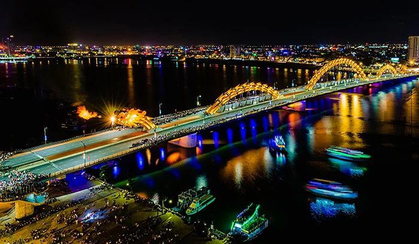

Địa điểm
Khám phá những địa điểm du lịch nổi tiếng tại Đà Nẵng.
Xem thêmThành phố biển xinh đẹp và đáng sống
Đà Nẵng là thành phố biển nổi tiếng với cảnh đẹp, ẩm thực phong phú và nhiều địa điểm du lịch hấp dẫn.
Khám phá ngayĐà Nẵng là thành phố trực thuộc Trung ương nằm ở miền Trung Việt Nam. Thành phố có vị trí thuận lợi và sở hữu nhiều cảnh quan thiên nhiên đa dạng.
Đà Nẵng được biết đến với những bãi biển đẹp, những cây cầu nổi bật, các khu du lịch nổi tiếng và đời sống đô thị hiện đại.
Bên cạnh du lịch, ẩm thực Đà Nẵng cũng là một điểm hấp dẫn đối với du khách với nhiều món ăn mang đậm hương vị miền Trung.
